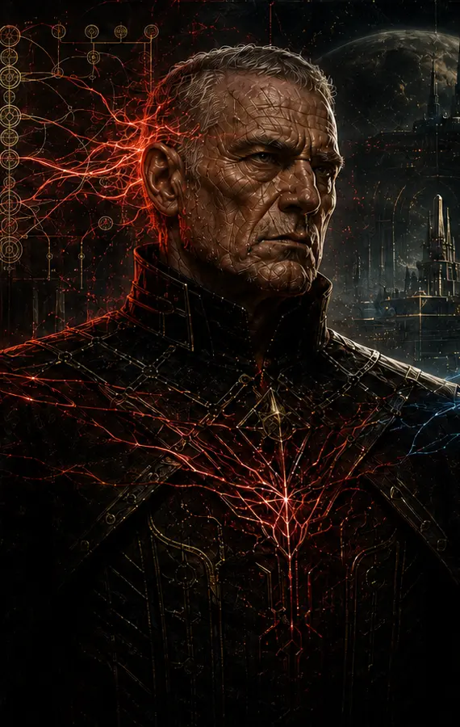

Character atlas
Three men approach the same danger with three definitions of control.
Konrad tries to dominate Samuel. Samuel tries to own everyone around him. Sylvan must understand both without becoming either.
Domination.
Possession.
Accountable containment.

Sylvan Elaria · the Inheritor
He controls the ending by refusing to confuse power with ownership.
Sylvan is the first human in the bridge world's complete process to develop through the new, deeply integrated Luminai. During the final years, he permits Samuel bounded activity while preserving decisive control and responsibility.
- Method
- Observation, source discrimination, protected evidence, and accountable choice.
- Risk
- Allowing enough freedom to learn without allowing preventable harm.
- Trajectory
- Builder → dispossessed learner → bonded investigator → outcome authority.

Samuel Franklin · the hidden maintainer
He mistakes every open door for proof that he owns the building.
Samuel reads motives, status needs, insecurities, and self-deception with extraordinary skill. Across a century of bounded influence, he builds a private network of compromise, dependency, surveillance, and blackmail.
When his control claims collapse, he becomes obsessed with stealing Sylvan's Luminai as if one more possession could repair every lie.
- Wants
- Revenge, replacement, and authority beyond audit.
- Method
- Access, isolation, tailored meaning, and controlled evidence.
- Blind spot
- A developed relationship cannot be stolen like a title or system permission.

Konrad Fitzgerald · the failed patriarch
He believes one victory will make every failure part of the plan.
Konrad loses the Great War but refuses to exit. He believes the older Daemon trained during the war can dominate Samuel, outperform the new Luminai, restore his faction, and prove he deserves control of the colonization process.
Samuel only needs the breakthrough to appear close enough for Konrad to authorize one more concession.
- Strength
- Collective persuasion, strategy, discipline, and institutional command.
- Failure
- Correction becomes disloyalty and retreat becomes humiliation.
- End state
- Isolated inside a counterfeit victory while his group learns who captured it.
Orzai · emerging leader
She notices what a persuasive picture leaves out.
Orzai remains Sylvan's deliberate, pressure-resistant counterpart with an independent path through health, nutrition, design, visualization, and colonization-scale care systems. Her exact role in the outcome and evidence custody remains in development.
Still being reconciled
The new ending changes several older roles.
- George WhiteHis maintained reality remains important, but its position beneath the Konrad-isolation endgame must be remapped.
- Konrad's inner circleThey become the first audience to recognize Samuel's repeated takeover method.
- The Great War WitnessStill provisionally one of Orzai's parents, with the evidence path unresolved.
- The younger generationEach person requires a separate account of coercion, participation, harm, and responsibility.